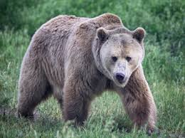
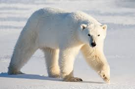
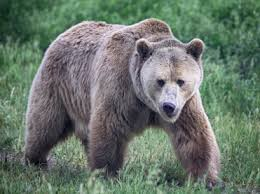
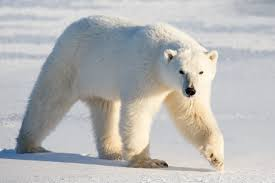

Etymology
The English word "bear" comes from Old English bera and belongs to a family of names for the bear in Germanic languages, such as Swedish björn, also used as a first name, that originate from an adjective meaning "brown". "Bear" therefore originally meant "the brown one." This terminology for the animal originated as a taboo avoidance term: proto-Germanic tribes replaced their original word for bear – arkto – with this euphemistic expression out of fear that speaking the animal's true name might cause it to appear.
Taxonomy and phylogeny
The family Ursidae is one of nine families in the suborder Caniformia, or "doglike" carnivorans, within the order Carnivora. Bears' closest living relatives are the pinnipeds, canids, and musteloids.[8] Modern bears comprise eight species in three subfamilies: Ailuropodinae (monotypic with the giant panda), Tremarctinae (monotypic with the spectacled bear), and Ursinae (containing six species divided into one to three genera, depending on the authority). Nuclear chromosome analysis show that the karyotype of the six ursine bears is nearly identical, with each having 74 chromosomes, whereas the giant panda has 42 chromosomes and the spectacled bear 52. These smaller numbers can be explained by the fusing of some chromosomes, and the banding patterns on these match those of the ursine species, but differ from those of procyonids, which supports the inclusion of these two species in Ursidae rather than in Procyonidae, where they had been placed by some earlier authorities.
Evolution
The earliest members of Ursidae belong to the extinct subfamily Amphicynodontinae, including Parictis (late Eocene to early middle Miocene, 38–18 Mya) and the slightly younger Allocyon (early Oligocene, 34–30 Mya), both from North America. These animals looked very different from today's bears, being small and raccoon-like in overall appearance, with diets perhaps more similar to that of a badger. Parictis does not appear in Eurasia and Africa until the Miocene.[10] It is unclear whether late-Eocene ursids were also present in Eurasia, although faunal exchange across the Bering land bridge may have been possible during a major sea level low stand as early as the late Eocene (about 37 Mya) and continuing into the early Oligocene.[11] European genera morphologically very similar to Allocyon, and to the much younger American Kolponomos (about 18 Mya),[12] are known from the Oligocene, including Amphicticeps and Amphicynodon.[11] There has been various morphological evidence linking amphicynodontines with pinnipeds, as both groups were semi-aquatic, otter-like mammals.[13][14][15] In addition to the support of the pinniped–amphicynodontine clade, other morphological and some molecular evidence supports bears being the closet living relatives to pinnipeds.